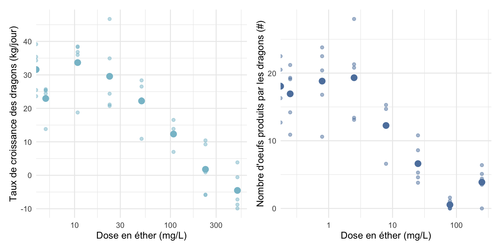

On peut faire un graphique avec deux types de points : Les points correspondant aux réplicats et les points correspondant à la moyenne pour une dose donnée (Figure 3.1).
Code
# Paramètres des graphiques size_mean <-3alpha_rep <-0.5p_C <-ggplot()+# Nuage de points avec un point par réplicatgeom_point(data = df_sim_croiss,mapping =aes(x = Dose,y = Txcroiss ),alpha = alpha_rep,color = col_croiss )+# Nuage de points correspondant aux moyennes par dosegeom_point(data = df_sim_croiss_mean,mapping =aes(x = Dose,y = Txcroiss ),alpha =1,color = col_croiss,size = size_mean )+scale_x_log10()+labs(x ="Dose en éther (mg/L)",y ="Taux de croissance des dragons (kg/jour)" )+theme_minimal()p_R <-ggplot()+# Nuage de points avec un point par réplicatgeom_point(data = df_sim_repro, mapping =aes( x = Dose, y = Oeuf ), alpha = alpha_rep, color = col_repro )+# Nuage de points correspondant aux moyennes par dosegeom_point(data = df_sim_repro_mean,mapping =aes(x = Dose,y = Oeuf ),alpha =1,color = col_repro,size = size_mean )+scale_x_log10()+labs( x ="Dose en éther (mg/L)",y ="Nombre d'oeufs produits par les dragons (#)" )+theme_minimal()p <- p_C + p_R +plot_layout(ncol =2)p
1
Initialisation du graphique
2
Données utilisées pour ce nuage de points
3
Axes à utiliser pour ce nuage de points
4
Transparence des points
5
Couleur des points
6
Taille des points pour ce nuage de points
7
Axe des x mis en échelle log (logarithme base 10)
8
Titres des axes
9
Aspect général du graphique
10
Les deux graphiques sont mis côte à côte

Figure 3.1: Taux de croissance et production d’oeufs des dragons en fonction de la dose d’éther
Ou on peut faire des bowplots, où la dose est bien une catégorie et non un nombre (Figure 3.2).
Code
# Paramètres des graphiques alpha_box <-0.2p_C <-ggplot(data = df_sim_croiss, mapping =aes( x =as.factor(round(Dose,1)),y = Txcroiss ) )+# Boxplotgeom_boxplot( alpha = alpha_box, color = col_croiss, fill = col_croiss )+# Pointsgeom_dotplot(binaxis='y', stackdir='center',dotsize=0.7, alpha=0.9, color = col_croiss,fill = col_croiss )+labs( x ="Dose en éther (mg/L)", y ="Taux de croissance des dragons (kg/jour)" )+theme_minimal() p_R <-ggplot(data = df_sim_repro, mapping =aes( x =as.factor(round(Dose,1)), y = Oeuf ) )+# Boxplotgeom_boxplot(alpha = alpha_box, color = col_repro, fill = col_repro )+# Pointsgeom_dotplot(binaxis='y', stackdir='center', dotsize=0.7, alpha=0.9, color = col_repro,fill = col_repro )+labs( x ="Dose en éther (mg/L)", y ="Nombre d'oeufs produits par les dragons (#)" )+theme_minimal() p <- p_C + p_R +plot_layout(ncol =2) p
1
Le type de la variable dose doit être convertit en facteur
2
Disposition des points
Figure 3.2: Taux de croissance et production d’oeufs des dragons en fonction de la dose d’éther
3.2 Etape 2 - Appliquer le modèle de Hill aux données
Les modèles de Hill pour la croissance et la reproduction peuvent présenter des différences :
Pour la reproduction, la réponse minimale est connue et fixée à 0, car il est impossible d’observer un nombre d’œufs négatif.
Pour la croissance, le taux minimal n’est pas toujours connu à l’avance, car il peut dépendre de facteurs biologiques et environnementaux.
La distribution des valeurs observées diffère entre les deux :
Le taux de croissance suit une distribution normale, car il résulte de variations continues influencées par de multiples facteurs.
La reproduction suit une distribution de Poisson, car elle repose sur un comptage d’événements discrets (nombre d’œufs produits).
Formellement, les modèles peuvent être écrit de la sorte avec \(Y_i\) la réponse d’un individu \(i\) exposé à une dose donnée :
# Modèle pour la croissancedrc.croiss <-drm( Txcroiss ~ Dose,data = df_sim_croiss,fct =LL.4(names =c("slope", "Ymin", "Ymax", "EC50"),fixed=c(NA, NA, NA, NA) ))# Modèle pour la reproductiondrc.repro <-drm( Oeuf ~ Dose, data = df_sim_repro,type="Poisson",fct =LL.4( names =c("slope", "Ymin", "Ymax", "EC50"), fixed=c(NA, 0, NA, NA) ))
1
Spécification de la formule : Endpoint à modéliser = Taux de croissance en fonction de la dose
2
Données à utiliser
3
Spécification du type de modèle à utiliser. Il existe différentes variante mais le modèle de Hill (modèle log-logistique à 4 paramètres) est le plus couramment utilisé
4
Re-définition du nom des variables du modèle pour qu’ils soient plus explicite
5
Argument permettant de fixer la valeur de certains paramètres du modèle. NA est mis quand on ne veut pas les fixer mais les estimer.
6
On spécifie que les résidus suivent une loi de Poisson.
3.3 Etape 3 - Visualisation des résultats du modèle
Pour pouvoir tracer les résultats du modèle proprement avec ggplot, il faut faire quelque tour de passe-passe mais la fonction plot(nom_du_modèle) peut simplement être utilisée.
On créé ensuite des dataframes correspondant aux prédictions de la réponse de nos dragons pour un très grand nombre de doses.
Il faut également qu’on puisse afficher les intervalles de confiance à 95% de notre modèle.
Grâce à tout cela on peut enfin tracer nos graphiques.
Code
# Paramètres des graphiques size_mean <-3alpha_rep <-0.5alpha_ribbon <-0.2line_width <-1.2p_drc_C <-ggplot()+# Affichage des intervalles de confiance à 95%geom_ribbon(data=CI.croiss, aes(x=Dose, y=p, ymin=pmin, ymax=pmax ), alpha=alpha_ribbon,#color = col_croiss,fill = col_croiss )+# Affichage de la courbe prédite par le modèlegeom_line(data = CI.croiss, aes(x=Dose, y=p ),linewidth = line_width,color = col_croiss )+# On réaffiche nos données de la même manière que précédementgeom_point(data=df_sim_croiss, aes(x=Dose, y=Txcroiss ), alpha=alpha_rep,color = col_croiss )+geom_point(data=df_sim_croiss_mean, aes(x=Dose, y=Txcroiss ), alpha=1,size = size_mean,color = col_croiss )+scale_x_log10()+labs(x="Dose en éther (mg/kg)",y="Taux de croissance des dragons (kg/jour)" )+theme_minimal()p_drc_R <-ggplot()+# Affichage des intervalles de confiance à 95%geom_ribbon(data=CI.repro, aes(x=Dose, y=p, ymin=pmin, ymax=pmax ), alpha=alpha_ribbon,#color = col_repro,fill = col_repro )+# Affichage de la courbe prédite par le modèlegeom_line(data = CI.repro, aes(x=Dose, y=p ),linewidth = line_width,color = col_repro )+# On réaffiche nos données de la même manière que précédementgeom_point(data=df_sim_repro, aes(x=Dose, y=Oeuf ), alpha=alpha_rep,color = col_repro )+geom_point(data=df_sim_repro_mean, aes(x=Dose, y=Oeuf ), alpha=1,size = size_mean,color = col_repro )+scale_x_log10()+labs(x="Dose en éther (mg/kg)",y="Nombre d'oeuf produits par les dragons (#)" )+theme_minimal()p <- p_drc_C + p_drc_R +plot_layout(ncol =2) p
Figure 3.3: Taux de croissance et production d’oeufs des dragons en fonction de la dose d’éther
Shapiro-Wilk normality test
data: residuals(drc.croiss)
W = 0.96991, p-value = 0.3575
Code
shapiro.test(residuals(drc.repro))
Shapiro-Wilk normality test
data: residuals(drc.repro)
W = 0.97294, p-value = 0.4437
L’hypothèse nulle spécifie la normalité des résidus, alors que l’hypothèse alternative spécifie la non-normalité. La p-value étant >0.05, rien ne permet de rejeter cette hypothèse de normalité.
Bartlett test of homogeneity of variances
data: residuals(drc.croiss) and as.factor(df_sim_croiss$Dose)
Bartlett's K-squared = 5.6592, df = 7, p-value = 0.5801
Bartlett test of homogeneity of variances
data: residuals(drc.repro) and as.factor(df_sim_repro$Dose)
Bartlett's K-squared = 13.409, df = 7, p-value = 0.06275
L’hypothèse nulle spécifie l’homogénéité des résidus, alors que l’hypothèse alternative spécifie leur hétérogénéité. La p-value étant >0.05, rien ne permet de rejeter cette hypothèse d’homogénéité des résidus.
3.5 Etape 5 - Détermination de la NOEC et de la LOEC
Pour déterminer la NOEC et la LOEC, il faut regarder si nos points expérimentaux sont significativement différents entre eux.
3.5.1 Pour la croissance
Code
shapiro.test(df_sim_croiss$Txcroiss)
Shapiro-Wilk normality test
data: df_sim_croiss$Txcroiss
W = 0.96064, p-value = 0.1761
Le test de Kruskal-Wallis nous donne bien l’information qu’il y a un effet de la dose sur le nombre d’oeufs produits par nos dragons. En revanche, le test de dunnet ne nous permet pas de déterminer une NOEC et une LOEC. Cela est du à la plus faible puissance statistique d’un test non-paramétrique vs. paramétrique comme utilisé juste avant.
Source Code
# Modélisation de la courbe dose-réponse - Exemple```{r, include=F}library(tidyverse); library(drc); library(readxl); library(nord)library(patchwork); library(multcomp); library(FSA)Nord_frost <-nord(palette ="frost")Nord_aurora <-nord(palette ="aurora")Nord_polar <-nord(palette ="polarnight")Nord_snow <-nord(palette ="snowstorm")col_croiss <- Nord_frost[2]col_repro <- Nord_frost[4]``````{r, eval=F}#| code-fold: showlibrary(tidyverse); library(drc); library(readxl); library(nord) # <1> Nord_frost <-nord(palette ="frost") # <2> Nord_aurora <-nord(palette ="aurora") # <2> Nord_polar <-nord(palette ="polarnight") # <2> Nord_snow <-nord(palette ="snowstorm") # <2> col_croiss <- Nord_frost[2] # <3>col_repro <- Nord_frost[4] # <3>```1. Packages utilisés ici2. Palettes de couleurs sympa qui vient d'ici : https://www.nordtheme.com3. Définition des couleurs pour nos endpointsOn s'intéresse à l'impact de la concentration en éther dans l'air (mg/L) sur la croissance et la reproduction des dragons.## Etape 1 - Importer et visualiser ses données```{r, message=FALSE, warning=FALSE}#| code-fold: showdf_sim_croiss <-read_excel(here::here("data/Data_sim_croiss_dragon.xlsx")) |># <1>mutate(Dose_f =as.factor(Dose)) # <3>df_sim_repro <-read_excel(here::here("data/Data_sim_repro_dragon.xlsx")) |># <2>mutate(Dose_f =as.factor(Dose)) # <4>```1. Importation des données de croissance de nos dragons2. Importation des données de reproduction de nos dragons3. Creation de `Dose_f`, de type factor4. Creation de `Dose_f`, de type factor```{r, message=FALSE, warning=FALSE}#| code-fold: showhead(df_sim_croiss) # <1>head(df_sim_repro) # <1>```1. Affiche les 5 premières lignesOn a des jeux de données avec :- `ID` : Numéro unique du dragon- `Nb_rep` : Numéro de réplicat par rapport à un dose donnée- `Dose` : Dose d'exposition du dragon (mg/L)- `Oeuf` : Le nombre d'oeuf produit par le dragon en 1 an- `Txcroiss` : Le taux de croissance du dragon (kg/jour)Il serait bien de d'avoir des jeux de donnée avec la moyenne du taux de croissance et la moyenne du nombre d'oeuf produit par dose testée.```{r, message=FALSE, warning=FALSE}#| code-fold: showdf_sim_croiss_mean <- df_sim_croiss |># <1>aggregate(Txcroiss ~ Dose, FUN = mean) # <1>df_sim_repro_mean <- df_sim_repro |># <1>aggregate(Oeuf ~ Dose, FUN = mean) # <1>head(df_sim_croiss_mean)head(df_sim_repro_mean)```1. Creation de nouveaux dataframes avec le taux de croissance et le nombre d'oeufs produits moyen par dose.Maintenant qu'on a importé nos données, on peut les visualiser de différentes façons.::: panel-tabset## DotsOn peut faire un graphique avec deux types de points : Les points correspondant aux réplicats et les points correspondant à la moyenne pour une dose donnée (@fig-datapoint).```{r, message=FALSE, warning=FALSE}#| fig-cap: Taux de croissance et production d'oeufs des dragons en fonction de la dose d'éther#| label: fig-datapoint#| fig-width: 8#| fig-height: 4# Paramètres des graphiques size_mean <-3alpha_rep <-0.5p_C <-ggplot()+# <1># Nuage de points avec un point par réplicatgeom_point(data = df_sim_croiss, # <2>mapping =aes( # <3>x = Dose, # <3>y = Txcroiss # <3> ), # <3>alpha = alpha_rep, # <4>color = col_croiss # <5> )+# Nuage de points correspondant aux moyennes par dosegeom_point(data = df_sim_croiss_mean,mapping =aes(x = Dose,y = Txcroiss ),alpha =1,color = col_croiss,size = size_mean # <6> )+scale_x_log10()+# <7>labs( # <8>x ="Dose en éther (mg/L)", # <8>y ="Taux de croissance des dragons (kg/jour)"# <8> )+# <8>theme_minimal() # <9>p_R <-ggplot()+# Nuage de points avec un point par réplicatgeom_point(data = df_sim_repro, mapping =aes( x = Dose, y = Oeuf ), alpha = alpha_rep, color = col_repro )+# Nuage de points correspondant aux moyennes par dosegeom_point(data = df_sim_repro_mean,mapping =aes(x = Dose,y = Oeuf ),alpha =1,color = col_repro,size = size_mean )+scale_x_log10()+labs( x ="Dose en éther (mg/L)",y ="Nombre d'oeufs produits par les dragons (#)" )+theme_minimal()p <- p_C + p_R +# <10>plot_layout(ncol =2) # <10>p ```1. Initialisation du graphique2. Données utilisées pour ce nuage de points3. Axes à utiliser pour ce nuage de points4. Transparence des points5. Couleur des points6. Taille des points pour ce nuage de points7. Axe des x mis en échelle log (logarithme base 10)8. Titres des axes9. Aspect général du graphique10. Les deux graphiques sont mis côte à côte## BoxplotOu on peut faire des bowplots, où la dose est bien une catégorie et non un nombre (@fig-databox).```{r, message=FALSE, warning=FALSE}#| fig-cap: Taux de croissance et production d'oeufs des dragons en fonction de la dose d'éther#| label: fig-databox#| fig-width: 8#| fig-height: 4# Paramètres des graphiques alpha_box <-0.2p_C <-ggplot(data = df_sim_croiss, mapping =aes( x =as.factor(round(Dose,1)), # <1> y = Txcroiss ) )+# Boxplotgeom_boxplot( alpha = alpha_box, color = col_croiss, fill = col_croiss )+# Pointsgeom_dotplot(binaxis='y', stackdir='center', # <2>dotsize=0.7, alpha=0.9, color = col_croiss,fill = col_croiss )+labs( x ="Dose en éther (mg/L)", y ="Taux de croissance des dragons (kg/jour)" )+theme_minimal() p_R <-ggplot(data = df_sim_repro, mapping =aes( x =as.factor(round(Dose,1)), y = Oeuf ) )+# Boxplotgeom_boxplot(alpha = alpha_box, color = col_repro, fill = col_repro )+# Pointsgeom_dotplot(binaxis='y', stackdir='center', dotsize=0.7, alpha=0.9, color = col_repro,fill = col_repro )+labs( x ="Dose en éther (mg/L)", y ="Nombre d'oeufs produits par les dragons (#)" )+theme_minimal() p <- p_C + p_R +plot_layout(ncol =2) p ```1. Le type de la variable dose doit être convertit en facteur2. Disposition des points:::## Etape 2 - Appliquer le modèle de Hill aux donnéesLes modèles de Hill pour la croissance et la reproduction peuvent présenter des différences :- Pour la **reproduction**, la réponse minimale est connue et fixée à 0, car il est impossible d'observer un nombre d'œufs négatif.- Pour la **croissance**, le taux minimal n'est pas toujours connu à l'avance, car il peut dépendre de facteurs biologiques et environnementaux.- La distribution des valeurs observées diffère entre les deux : - Le **taux de croissance** suit une distribution **normale**, car il résulte de variations continues influencées par de multiples facteurs. - La **reproduction** suit une distribution de **Poisson**, car elle repose sur un comptage d'événements discrets (nombre d'œufs produits).Formellement, les modèles peuvent être écrit de la sorte avec $Y_i$ la réponse d'un individu $i$ exposé à une dose donnée :$$\begin{aligned}\text{Pour la croissance : }Y_i \sim \mathcal{N}(\text{Hill}(Dose_i), \sigma^2)\end{aligned}$$ {#eq-drccroiss}$$\begin{aligned}\text{Pour la reproduction : }Y_i \sim \mathcal{P}(\text{Hill}(Dose_i))\end{aligned}$$ {#eq-drcrepro}La librairie `drc` peut maintenant être utilisée.```{r, message=F, warning= F}#| code-fold: show# Modèle pour la croissancedrc.croiss <-drm( Txcroiss ~ Dose, # <1>data = df_sim_croiss, # <2>fct =LL.4( # <3>names =c("slope", "Ymin", "Ymax", "EC50"), # <4>fixed=c(NA, NA, NA, NA) # <5> ))# Modèle pour la reproductiondrc.repro <-drm( Oeuf ~ Dose, data = df_sim_repro,type="Poisson", # <6>fct =LL.4( names =c("slope", "Ymin", "Ymax", "EC50"), fixed=c(NA, 0, NA, NA) ))```1. Spécification de la formule : Endpoint à modéliser = Taux de croissance en fonction de la dose2. Données à utiliser3. Spécification du type de modèle à utiliser. Il existe différentes variante mais le modèle de Hill (modèle log-logistique à 4 paramètres) est le plus couramment utilisé4. Re-définition du nom des variables du modèle pour qu'ils soient plus explicite5. Argument permettant de fixer la valeur de certains paramètres du modèle. NA est mis quand on ne veut pas les fixer mais les estimer.6. On spécifie que les résidus suivent une loi de Poisson.Résumé du modèle pour la croissance :```{r, message=F, warning=F}#| code-fold: showsummary(drc.croiss)```Résumé du modèle pour la reproduction :```{r, message=F, warning=F}#| code-fold: showsummary(drc.repro)```Nous pouvons également extraire des EC$_{10}$ des ces modèles :```{r}EC10_croiss <-ED(drc.croiss, 10, interval ="delta")EC10_repro <-ED(drc.repro, 10, interval ="delta")EC10_croiss_show <-round(EC10_croiss[1],2)EC10_repro_show <-round(EC10_repro[1],2)```- Croissance : EC$_{10}$ = `r EC10_croiss_show` mg/L- Reproduction : EC$_{10}$ = `r EC10_repro_show` mg/L## Etape 3 - Visualisation des résultats du modèlePour pouvoir tracer les résultats du modèle proprement avec `ggplot`, il faut faire quelque tour de passe-passe mais la fonction `plot(nom_du_modèle)` peut simplement être utilisée.On créé ensuite des dataframes correspondant aux prédictions de la réponse de nos dragons pour un très grand nombre de doses.Il faut également qu'on puisse afficher les intervalles de confiance à 95% de notre modèle.```{r, message=F, warning=F}#| code-fold: showDose_x <-expand.grid(exp(seq(log(0.01),log(5000), by=(log(5000)-log(0.01))/100 ) ) )CI.croiss <-data.frame(Dose=Dose_x$Var1 )pm.croiss <-predict(drc.croiss, newdata=CI.croiss, interval="confidence")CI.croiss$p <- pm.croiss[,1]CI.croiss$pmin <- pm.croiss[,2]CI.croiss$pmax <- pm.croiss[,3]CI.repro <-data.frame(Dose=Dose_x$Var1 )pm.repro <-predict(drc.repro, newdata=CI.repro, interval="confidence")CI.repro$p <- pm.repro[,1]CI.repro$pmin <- pm.repro[,2]CI.repro$pmax <- pm.repro[,3]```Grâce à tout cela on peut enfin tracer nos graphiques.```{r, message=F, warning=F}#| fig-cap: Taux de croissance et production d'oeufs des dragons en fonction de la dose d'éther#| label: fig-drcdragon#| fig-width: 8#| fig-height: 4# Paramètres des graphiques size_mean <-3alpha_rep <-0.5alpha_ribbon <-0.2line_width <-1.2p_drc_C <-ggplot()+# Affichage des intervalles de confiance à 95%geom_ribbon(data=CI.croiss, aes(x=Dose, y=p, ymin=pmin, ymax=pmax ), alpha=alpha_ribbon,#color = col_croiss,fill = col_croiss )+# Affichage de la courbe prédite par le modèlegeom_line(data = CI.croiss, aes(x=Dose, y=p ),linewidth = line_width,color = col_croiss )+# On réaffiche nos données de la même manière que précédementgeom_point(data=df_sim_croiss, aes(x=Dose, y=Txcroiss ), alpha=alpha_rep,color = col_croiss )+geom_point(data=df_sim_croiss_mean, aes(x=Dose, y=Txcroiss ), alpha=1,size = size_mean,color = col_croiss )+scale_x_log10()+labs(x="Dose en éther (mg/kg)",y="Taux de croissance des dragons (kg/jour)" )+theme_minimal()p_drc_R <-ggplot()+# Affichage des intervalles de confiance à 95%geom_ribbon(data=CI.repro, aes(x=Dose, y=p, ymin=pmin, ymax=pmax ), alpha=alpha_ribbon,#color = col_repro,fill = col_repro )+# Affichage de la courbe prédite par le modèlegeom_line(data = CI.repro, aes(x=Dose, y=p ),linewidth = line_width,color = col_repro )+# On réaffiche nos données de la même manière que précédementgeom_point(data=df_sim_repro, aes(x=Dose, y=Oeuf ), alpha=alpha_rep,color = col_repro )+geom_point(data=df_sim_repro_mean, aes(x=Dose, y=Oeuf ), alpha=1,size = size_mean,color = col_repro )+scale_x_log10()+labs(x="Dose en éther (mg/kg)",y="Nombre d'oeuf produits par les dragons (#)" )+theme_minimal()p <- p_drc_C + p_drc_R +plot_layout(ncol =2) p```## Etape 4 - Validation du modèle```{r, warning=F, message=F}#| fig-cap: Diagnostic graphs#| label: fig-drcdiag#| fig-width: 8#| fig-height: 6plot_QQ.croiss <-ggplot(mapping=aes(sample=residuals(drc.croiss) ) )+stat_qq(alpha=0.3,color=col_croiss )+stat_qq_line(color=col_croiss)+labs(x="Normal quantiles", y="Residuals",title ="Croissance" )+theme_minimal()plot_resfit.croiss <-ggplot()+geom_point(mapping=aes(x=fitted(drc.croiss), y=residuals(drc.croiss) ), color=col_croiss, alpha=0.3 )+labs(x="Fitted", y="Residuals",title ="Croissance" )+scale_x_log10()+theme_minimal()plot_QQ.repro <-ggplot(mapping=aes(sample=residuals(drc.repro) ) )+stat_qq(alpha=0.3,color=col_repro )+stat_qq_line(color=col_repro)+labs(x="Normal quantiles", y="Residuals",title ="Reproduction" )+theme_minimal()plot_resfit.repro <-ggplot()+geom_point(mapping=aes(x=fitted(drc.repro), y=residuals(drc.repro) ), color=col_repro, alpha=0.3 )+labs(x="Fitted", y="Residuals",title ="Reproduction" )+scale_x_log10()+theme_minimal()plot <- plot_resfit.croiss + plot_QQ.croiss + plot_resfit.repro + plot_QQ.repro +plot_layout(ncol=2)plot```Test de la normalité des résidus :```{r}shapiro.test(residuals(drc.croiss))shapiro.test(residuals(drc.repro))```L’hypothèse nulle spécifie la normalité des résidus, alors que l’hypothèse alternative spécifie la non-normalité. La p-value étant \>0.05, rien ne permet de rejeter cette hypothèse de normalité.Test de l'homogénéité des résidus :```{r}bartlett.test(residuals(drc.croiss), as.factor(df_sim_croiss$Dose) ) bartlett.test(residuals(drc.repro), as.factor(df_sim_repro$Dose) ) ```L’hypothèse nulle spécifie l'homogénéité des résidus, alors que l’hypothèse alternative spécifie leur hétérogénéité. La p-value étant \>0.05, rien ne permet de rejeter cette hypothèse d'homogénéité des résidus.## Etape 5 - Détermination de la NOEC et de la LOECPour déterminer la NOEC et la LOEC, il faut regarder si nos points expérimentaux sont significativement différents entre eux.### Pour la croissance```{r}shapiro.test(df_sim_croiss$Txcroiss) ``````{r}bartlett.test( Txcroiss~Dose_f,data=df_sim_croiss )```L'hypothèse de normalité des données et d'homogénéité des variances sont vérifiées.```{r, warning=F}lm.croiss <-aov(Txcroiss ~ Dose_f, data = df_sim_croiss)summary(lm.croiss)dunnett.test.croiss <-glht(lm.croiss, linfct =mcp(Dose_f ="Dunnett"))summary(dunnett.test.croiss)```D'après ces résultats, on en déduit que pour notre jeu de données :- NOEC = 50 mg/L- LOEC = 107.7 mg/L### Pour la reproduction```{r}shapiro.test(df_sim_repro$Oeuf) ``````{r}bartlett.test( Oeuf~Dose_f,data=df_sim_repro )```L'hypothèse de normalité des données et d'homogénéité des variances sont vérifiées.```{r, warning=F}lm.repro <-aov(Oeuf ~ Dose_f, data = df_sim_repro)summary(lm.repro)dunnett.test.repro <-glht(lm.repro, linfct =mcp(Dose_f ="Dunnett"))summary(dunnett.test.repro)```D'après ces résultats, on en déduit que pour notre jeu de données :- NOEC = 7.9 mg/L- LOEC = 25 mg/LSi une des hypothèses n'était pas vérifiée, on ferait :```{r}kruskal.test(Oeuf ~ Dose_f, data = df_sim_repro)dunn.repro <-dunnTest(Oeuf ~ Dose_f, data = df_sim_repro, method ="bonferroni")dunn_results <-as.data.frame(dunn.repro$res) dunn_results |> dplyr::select(Comparison, P.adj)```Le test de Kruskal-Wallis nous donne bien l'information qu'il y a un effet de la dose sur le nombre d'oeufs produits par nos dragons. En revanche, le test de dunnet ne nous permet pas de déterminer une NOEC et une LOEC. Cela est du à la plus faible puissance statistique d'un test non-paramétrique vs. paramétrique comme utilisé juste avant.